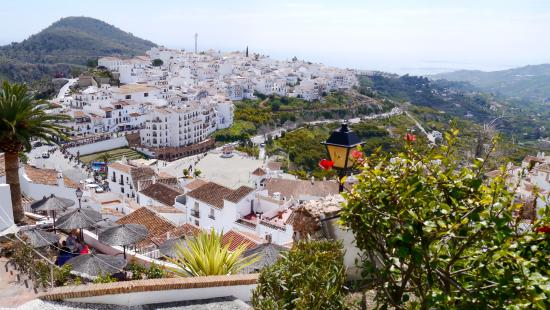
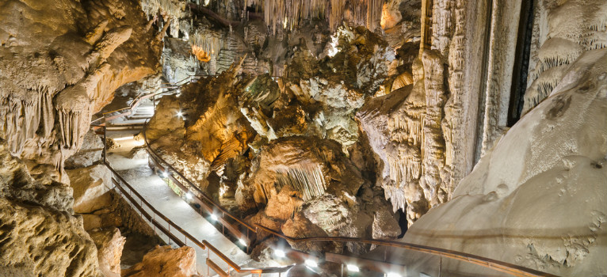

På det fyrste bildet, så ser me eit lite bilde av Malaga si havn og litt av Malaga.
På det andre bildet så ser me eit bilde av byen Frigiliana som me var på tur til eine dagen.
På det siste bildet ser du eit bilde av kalkstein grottene i byen Nerja som me var i samme dagen som me besøkte Frigiliana